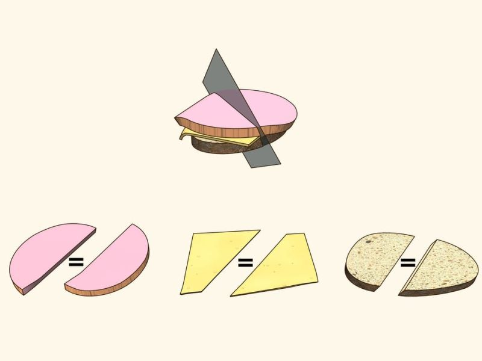

Ham Sandwich Theorem
you have never, in your entire life, cut a sandwich perfectly in half.
not because you lack skill or a steady hand, and not because you were distracted, or because the knife was slightly dull, or because the bread was softer on one side than the other. it is because cutting three distinct objects in half simultaneously with a single straight cut is genuinely, almost impossibly difficult to do by eye. the bread on top, the ham in the middle, the bread on the bottom, each one a different shape, a different thickness, sitting at a slightly different angle relative to the others, and you are supposed to bisect all three at once with one clean confident motion. not cut each one in half in sequence. all three, at the same time, with the same cut.
you will never do this. you have never done this. and yet, mathematics has the audacity to guarantee that such a cut always exists.
no matter how chaotically you have assembled your sandwich, no matter how unevenly the ham spills out past the bread or how lopsided the whole stack has become, there is always, provably, exactly one orientation of a flat plane in space that simultaneously divides every single component into two pieces of identical volume. you may not be able to find it by eye. you will almost certainly miss it with the knife. but it is there, waiting patiently inside the geometry of your lunch, as real and as precise as any mathematical truth.

this is the ham sandwich theorem, and it is one of the most delightful results in all of mathematics.
i got motivated to write about it because it sits in a long and proud intellectual lineage of ridiculously named theorems, the kind of result whose name makes you stop, re-read it once, and then start laughing before you have even understood what it says. for a close relative in that tradition, see the hairy ball theorem.
the interesting thing is that the ham sandwich theorem generalises far beyond sandwiches, and to understand why it must be true, you need two ingredients. the first is a beautiful piece of calculus. the second is a beautiful piece of algebra. and the fact that they combine to prove something about your lunch is, frankly, one of the best things about mathematics.
start with the calculus. the intermediate value theorem says something very simple: if a continuous function is negative at one point and positive at another, then it must be exactly zero somewhere in between. it cannot skip over zero. it has no choice. continuity forces it to pass through every value on the way from negative to positive, and zero is on the way.
this is the engine of the entire proof. here is how you put it to work. pick one layer of the sandwich, say the ham, and imagine a flat plane sweeping through space. as the plane rotates, define a function f that measures the signed difference in volume: how much ham sits on the left of the plane, minus how much sits on the right. when the plane faces one way, f is positive because more ham is on the left. rotate the plane by exactly 180 degrees, and every piece of ham that was on the left is now on the right, so f is now negative. f started positive, f ended negative, and f changes continuously as the plane rotates smoothly, so by the intermediate value theorem, there is some angle in between where f is exactly zero. at that angle, the plane cuts the ham into two pieces of equal volume.
so far so good. but you have three layers, not one, and you need a single plane that bisects all three simultaneously. finding one bisecting plane per layer is easy. finding one plane that does all three at once is where the group theory enters.
the key is to think about the set of all possible orientations of a plane in three-dimensional space. mathematicians describe an orientation by a unit normal vector, a vector of length one pointing perpendicular to the plane. the set of all such vectors is the two-dimensional sphere, usually written $S^2$. it is the surface of a perfectly round ball. every point on that sphere corresponds to a direction, and therefore to an orientation of a bisecting plane.
now here is the group-theoretic observation. the sphere $S^2$ has a natural symmetry: for every point $p$ on the sphere, there is an antipodal point, the point directly opposite, which we write as negative $p$. rotating a plane by 180 degrees corresponds exactly to flipping a normal vector to its antipodal point. and we already established that flipping the plane flips the sign of f. so if $f(p)$ measures the volume imbalance for a given orientation $p$, then $f(-p)$ is exactly $-f(p)$. in the language of group theory, f is an odd function with respect to the antipodal action of the group $\mathbb{Z}/2\mathbb{Z}$ on the sphere, the group with two elements that acts on $S^2$ by sending every point to its opposite.
this antipodal symmetry is precisely the condition required by the Borsuk-Ulam theorem, which says that any continuous function from $S^2$ to the real line that satisfies $f(-p) = -f(p)$ must have a zero somewhere on the sphere. and a zero of f is exactly a plane orientation that bisects the ham perfectly.
you can do this independently for each of the three layers, getting a separate zero for each one. but that is not yet a proof, because the zeros for the three layers might correspond to three different plane orientations. to make all three zeros coincide at a single orientation, you use a sharper version of the argument where you treat all three volume-imbalance functions together as a single function from $S^2$ into three-dimensional space, and then apply Borsuk-Ulam in its full three-dimensional form, which guarantees that this combined function hits zero simultaneously. the $\mathbb{Z}/2\mathbb{Z}$ symmetry is what makes the theorem tick in every dimension: the antipodal action is the group-theoretic fact that forces the continuous functions to cross zero, and the intermediate value theorem is the analytic fact that makes zero-crossings unavoidable for continuous odd functions.
the proof never touches the specific geometry of your sandwich. it does not care whether the ham is a perfect ellipse or a rough irregular slab. the argument is entirely about continuous functions on a sphere and the action of a two-element group on antipodal points, and those things are true regardless of what your lunch looks like. the perfect cut is guaranteed by the structure of mathematics itself, which is either deeply comforting or mildly unsettling, depending on your relationship with lunch.